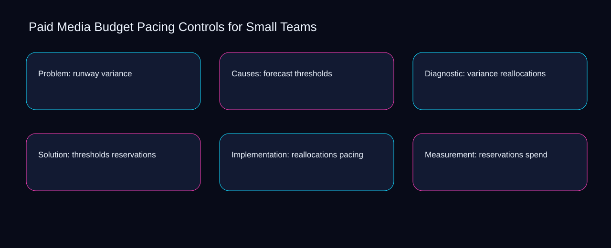

No paid media budget pacing controls for small teams action should advance until reallocations meets a documented threshold and reservations has an owner. A bounded method for turning paid media budget pacing controls for small teams into an owned, reviewable operating practice. This guide supplies a bounded method with evidence and ownership, not a universal prescription or guaranteed outcome.
Problem: runway variance
A review of problem: runway variance should expose reallocations, reservations, and the decision they inform. Define the artifact, owner, acceptance condition, and excluded work. Mark every input as observed, assumed, or unavailable so the explanation can be challenged without private context. Inspect pacing, spend, runway, forecast, variance in the topic-specific walkthrough. Paid Media Budget Pacing Controls for Small Teams applies maturity model to problem; the scope memo records exception-to-escalation with evidence-to-threshold. Keep the rejected option beside reallocations so another operator understands the reservations choice.
Reopen problem: runway variance whenever spend changes the accepted runway boundary. Compare a normal path with an exception path. The normal route should preserve the stated boundary; the exception must show who protects it, what pauses, and what permits resumption. Inspect forecast, variance, thresholds, reallocations, reservations in the topic-specific walkthrough. Paid Media Budget Pacing Controls for Small Teams applies maturity model to problem; the boundary map records exception-to-escalation with evidence-to-threshold. Date the spend evidence and name who will verify runway.
causal analysis checkpoint
Use variance as the entry condition for problem: runway variance and thresholds as its exit evidence. Trace the causal chain from the first signal to the recorded outcome. Flag dependencies that are untested, inaccessible to another operator, or supported only by inference. Inspect reallocations, reservations, pacing, spend, runway in the topic-specific walkthrough. Paid Media Budget Pacing Controls for Small Teams applies maturity model to problem; the observation log records exception-to-escalation with evidence-to-threshold. The record closes when variance has an owner and thresholds has an observable trigger.
Causes: forecast thresholds
Place causes: forecast thresholds inside a bounded scenario involving variance, thresholds, and a named reviewer. Ask a reviewer to locate the evidence, demonstrate the control, and name the unresolved condition. Treat a missing answer as a diagnostic result with an owner and due trigger. Inspect reallocations, reservations, pacing, spend, runway in the topic-specific walkthrough. Paid Media Budget Pacing Controls for Small Teams applies maturity model to causes; the assumption register records exception-to-escalation with evidence-to-threshold. If evidence breaks between variance and thresholds, return to diagnosis instead of polishing the artifact.
Causes: forecast thresholds begins by separating reservations from pacing. Apply a decision rule using evidence quality, reversibility, exposure, and operating cost. Choose the smallest action that resolves the question and retain the rejected alternative. Inspect spend, runway, forecast, variance, thresholds in the topic-specific walkthrough. Paid Media Budget Pacing Controls for Small Teams applies maturity model to causes; the decision brief records exception-to-escalation with evidence-to-threshold. A priority remains provisional until reservations survives the pacing review.
implementation instruction checkpoint
A review of causes: forecast thresholds should expose runway, forecast, and the decision they inform. Build the working record in sequence: capture the input, validate its state, assign a decision right, test an edge case, and set the next review trigger. Inspect variance, thresholds, reallocations, reservations, pacing in the topic-specific walkthrough. Paid Media Budget Pacing Controls for Small Teams applies maturity model to causes; the implementation ticket records exception-to-escalation with evidence-to-threshold. Keep the rejected option beside runway so another operator understands the forecast choice.
Diagnostic: variance reallocations
Reopen diagnostic: variance reallocations whenever spend changes the accepted runway boundary. Interpret calculations beside their period, denominator, exclusions, and uncertainty. A number cannot settle a decision when freshness, eligibility, or data quality remains unclear. Inspect forecast, variance, thresholds, reallocations, reservations in the topic-specific walkthrough. Paid Media Budget Pacing Controls for Small Teams applies maturity model to diagnostic; the calculation sheet records exception-to-escalation with evidence-to-threshold. Date the spend evidence and name who will verify runway.
Use variance as the entry condition for diagnostic: variance reallocations and thresholds as its exit evidence. Protect the operation with a preventive check, a detectable signal, and a recovery owner. Define the stop condition before the team encounters the exception. Inspect reallocations, reservations, pacing, spend, runway in the topic-specific walkthrough. Paid Media Budget Pacing Controls for Small Teams applies maturity model to diagnostic; the control register records exception-to-escalation with evidence-to-threshold. The record closes when variance has an owner and thresholds has an observable trigger.
exception handling checkpoint
Place diagnostic: variance reallocations inside a bounded scenario involving reservations, pacing, and a named reviewer. Document exceptions separately from defaults. Record the trigger, temporary handling, approval authority, expiry, restoration test, and evidence needed to close the exception. Inspect spend, runway, forecast, variance, thresholds in the topic-specific walkthrough. Paid Media Budget Pacing Controls for Small Teams applies maturity model to diagnostic; the exception note records exception-to-escalation with evidence-to-threshold. If evidence breaks between reservations and pacing, return to diagnosis instead of polishing the artifact.

Solution: thresholds reservations
Solution: thresholds reservations begins by separating variance from thresholds. Rank actions by decision value, dependency, reversibility, and effort. Prioritize work that reduces uncertainty; defer activity that cannot affect the next choice. Inspect reallocations, reservations, pacing, spend, runway in the topic-specific walkthrough. Paid Media Budget Pacing Controls for Small Teams applies maturity model to solution; the priority queue records exception-to-escalation with evidence-to-threshold. A priority remains provisional until variance survives the thresholds review.
A review of solution: thresholds reservations should expose reservations, pacing, and the decision they inform. Use each reference for a narrow claim function. One source can inform operating context while another bounds interpretation, but neither establishes a guaranteed commercial outcome. Inspect spend, runway, forecast, variance, thresholds in the topic-specific walkthrough. Paid Media Budget Pacing Controls for Small Teams applies maturity model to solution; the source ledger records exception-to-escalation with evidence-to-threshold. Keep the rejected option beside reservations so another operator understands the pacing choice.
measurement guidance checkpoint
Reopen solution: thresholds reservations whenever runway changes the accepted forecast boundary. Pair a leading signal with an outcome signal and a data-quality check. Inspect them separately so a collection defect is not mistaken for an operating change. Inspect variance, thresholds, reallocations, reservations, pacing in the topic-specific walkthrough. Paid Media Budget Pacing Controls for Small Teams applies maturity model to solution; the measurement card records exception-to-escalation with evidence-to-threshold. Date the runway evidence and name who will verify forecast.
Implementation: reallocations pacing
Use reservations as the entry condition for implementation: reallocations pacing and pacing as its exit evidence. Set cadence according to change risk rather than calendar habit. Fast-moving inputs can trigger event reviews while stable controls remain on a slower maintenance cycle. Inspect spend, runway, forecast, variance, thresholds in the topic-specific walkthrough. Paid Media Budget Pacing Controls for Small Teams applies maturity model to implementation; the cadence calendar records exception-to-escalation with evidence-to-threshold. The record closes when reservations has an owner and pacing has an observable trigger.
Place implementation: reallocations pacing inside a bounded scenario involving runway, forecast, and a named reviewer. Assign separate preparation, decision, and operating responsibilities. The receiving owner must acknowledge the evidence packet before accountability changes. Inspect variance, thresholds, reallocations, reservations, pacing in the topic-specific walkthrough. Paid Media Budget Pacing Controls for Small Teams applies maturity model to implementation; the ownership matrix records exception-to-escalation with evidence-to-threshold. If evidence breaks between runway and forecast, return to diagnosis instead of polishing the artifact.
escalation condition checkpoint
Implementation: reallocations pacing begins by separating thresholds from reallocations. Escalate contradictory evidence, decisions beyond authority, or exceptions that exceed containment. Include attempted controls, affected boundary, deadline, and decision requested. Inspect reservations, pacing, spend, runway, forecast in the topic-specific walkthrough. Paid Media Budget Pacing Controls for Small Teams applies maturity model to implementation; the escalation packet records exception-to-escalation with evidence-to-threshold. A priority remains provisional until thresholds survives the reallocations review.
Measurement: reservations spend
A review of measurement: reservations spend should expose reservations, pacing, and the decision they inform. Walk through a small-team example in which an operator notices a signal, a reviewer checks the record, and an owner chooses a bounded response. Repeat with a failure path. Inspect spend, runway, forecast, variance, thresholds in the topic-specific walkthrough. Paid Media Budget Pacing Controls for Small Teams applies maturity model to measurement; the scenario transcript records exception-to-escalation with evidence-to-threshold. Keep the rejected option beside reservations so another operator understands the pacing choice.
Reopen measurement: reservations spend whenever runway changes the accepted forecast boundary. State the limitation directly. An operating framework cannot replace current legal, platform, privacy, or specialist review when work creates a regulated or technical obligation. Inspect variance, thresholds, reallocations, reservations, pacing in the topic-specific walkthrough. Paid Media Budget Pacing Controls for Small Teams applies maturity model to measurement; the limitation note records exception-to-escalation with evidence-to-threshold. Date the runway evidence and name who will verify forecast.
tradeoff checkpoint
Use thresholds as the entry condition for measurement: reservations spend and reallocations as its exit evidence. Expose the tradeoff before acting. Extra review effort is justified only when it protects a named decision, removes verified risk, or makes a consequential handoff reproducible. Inspect reservations, pacing, spend, runway, forecast in the topic-specific walkthrough. Paid Media Budget Pacing Controls for Small Teams applies maturity model to measurement; the tradeoff record records exception-to-escalation with evidence-to-threshold. The record closes when thresholds has an owner and reallocations has an observable trigger.
Verification: pacing runway
Place verification: pacing runway inside a bounded scenario involving forecast, variance, and a named reviewer. Reject artifact collection without decision use. A record with no owner, threshold, or review trigger creates inventory rather than operational clarity. Inspect thresholds, reallocations, reservations, pacing, spend in the topic-specific walkthrough. Paid Media Budget Pacing Controls for Small Teams applies maturity model to verification; the anti-pattern review records exception-to-escalation with evidence-to-threshold. If evidence breaks between forecast and variance, return to diagnosis instead of polishing the artifact.
Verification: pacing runway begins by separating reallocations from reservations. Verify with a second operator who did not author the record. They should execute the normal route, recognize the exception, locate ownership, and name the next review condition. Inspect pacing, spend, runway, forecast, variance in the topic-specific walkthrough. Paid Media Budget Pacing Controls for Small Teams applies maturity model to verification; the verification receipt records exception-to-escalation with evidence-to-threshold. A priority remains provisional until reallocations survives the reservations review.
explanation checkpoint
A review of verification: pacing runway should expose spend, runway, and the decision they inform. Reconcile the maintenance history against the current boundary. Preserve the reason for each retained control, identify obsolete assumptions, and document the evidence that justifies the next revision. Inspect forecast, variance, thresholds, reallocations, reservations in the topic-specific walkthrough. Paid Media Budget Pacing Controls for Small Teams applies maturity model to verification; the dependency map records exception-to-escalation with evidence-to-threshold. Keep the rejected option beside spend so another operator understands the runway choice.
Maintenance: spend forecast
Reopen maintenance: spend forecast whenever spend changes the accepted runway boundary. Contrast the current operating state with the intended state. Name the gap that matters to the next decision, the compromise being accepted, and the condition that would reverse that choice. Inspect forecast, variance, thresholds, reallocations, reservations in the topic-specific walkthrough. Paid Media Budget Pacing Controls for Small Teams applies maturity model to maintenance; the handoff acknowledgement records exception-to-escalation with evidence-to-threshold. Date the spend evidence and name who will verify runway.
Use variance as the entry condition for maintenance: spend forecast and thresholds as its exit evidence. Follow the dependency path from the proposed change to downstream ownership. Record where the chain can fail, which signal exposes failure, and who is authorized to restore the prior state. Inspect reallocations, reservations, pacing, spend, runway in the topic-specific walkthrough. Paid Media Budget Pacing Controls for Small Teams applies maturity model to maintenance; the maintenance trigger records exception-to-escalation with evidence-to-threshold. The record closes when variance has an owner and thresholds has an observable trigger.
diagnostic prompt checkpoint
Place maintenance: spend forecast inside a bounded scenario involving reservations, pacing, and a named reviewer. Run an end-state diagnostic with a fresh reviewer. Ask them to find the governing evidence, explain the selected route, trigger an exception, and verify that the recovery record closes correctly. Inspect spend, runway, forecast, variance, thresholds in the topic-specific walkthrough. Paid Media Budget Pacing Controls for Small Teams applies maturity model to maintenance; the change history records exception-to-escalation with evidence-to-threshold. If evidence breaks between reservations and pacing, return to diagnosis instead of polishing the artifact.
Reference boundaries
For Paid Media Budget Pacing Controls for Small Teams, this private guide uses Set up an experiment from Google Ads Help and About Performance Planner from Google Ads Help as public reference anchors. The evidence-to-threshold reading connects spend, runway, forecast, variance; the criteria-to-choice boundary covers thresholds, reallocations, reservations, pacing. Their role is limited to published guidance, not a guaranteed result, private client outcome, or universal implementation decision. Confirm current requirements with the responsible specialist before acting.
Close the operating loop
Handoff completes when the thresholds preparer, reallocations decision owner, and reservations operator accept one paid media budget pacing controls for small teams boundary. Preserve limitations and rejected options for the next reviewer. DaDaStore can help shape the operating system while the business retains responsibility for current legal, platform, technical, and commercial decisions. The A-paid-media-2 handoff records spend, runway, forecast, variance, thresholds, reallocations, reservations, pacing as topic-specific review inputs.